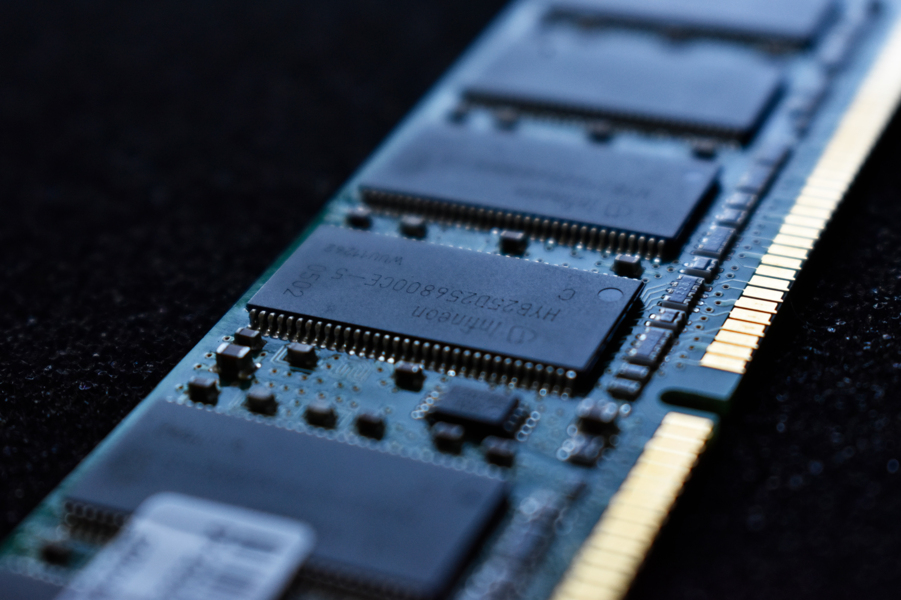

<!DOCTYPE html>
<html>
    <head>
        <title> Olstudive | Situs Belajar Technology Information </title>
        <link rel="stylesheet" a href="asset/article2.css"/>
        <meta name="viewport" content="width=device-width, initial-scale=1.0"/>
    </head>
</html>
<body>
    <header>
        <nav>
            <div class="logo">
                
            </div>
            <ul>
                <li><a href="index.html">Home</a></li>
                <li><a href="about.html">About</a></li>
                <li><a href="index.html#article">Article</a></li>
                <li class="contact btn"><a href="index.html#contact">Contact</a></li>
            </ul>
        </nav>
    </header>
    <main>
        <div id="content">
            <article class="card">
                <h1>RAM </h1>
                
                <p>Didalam dunia teknologi Ram merupakan salah satu komponen penting perangkat komputer/laptop. Karena itu mungkin anda sudah tidak asing lagi mendengar kata ram pada saat anda ingin membeli sebuah perangkat laptop ataupun komputer di tempat perbelanjaan elektronik. Namun,sebenarnya apakah anda sudah mengetahui apa itu ram dan apa fungsinya? Oleh karena itu disini kita akan membahas detail  tentang ram.</p>
                <h3> Pengertian </h3>
                    <p>Kita mulai dari pengertian ram itu sendiri. RAM atau yang biasa disebut Random Access Memory dalam terjemahan bahasa indonesia memiliki arti Memori Akses Acak,
                    <mark>RAM yaitu suatu memori tempat penyimpanan data yang bersifat sementara</mark>, ketika saat komputer dijalankan dan dapat diakses secara acak (random). Walaupun RAM adalah perangkat memori yang paling cepat dalam suatu komputer dibandingkan dengan jenis perangkat penyimpanan lain seperti HDD(Hard Disk Drive) dan SSD(Solid State Drive). Namun yang membedakan RAM dengan perangkat penyimpanan yang lain adalah karena RAM bersifat sementara, yang artinya jika komputer atau laptop di matikan maka data tersebut yang ada pada RAM juga akan terhapus.
                    </p>
                <h3> Sejarah Awal Mula RAM </h3>
                    <p>RAM atau Random Access Memory pertama kali ditemukan oleh Robert Dennard,setelah itu Intel memproduksi RAM untuk pertama kalinya pada tahun 1968. RAM lebih awal diproduksi bahkan jauh sebelum penemuan PC pada tahun 1981. Setelah komputer diciptakan, perkembangan RAM barulah dimulai. Dibutuhkan tegangan sebesar 5.0 volt pada saat RAM mulai diproduksi sehingga RAM bisa bekerja dengan frekuensi sebesar 4.77 Mhz.</p>
                <h3> Fungsi RAM </h3>
                    <p> Dalam sebuah perangkat tentunya memiliki fungsi didalamnya , begitupun juga dengan RAM. 
                    Fungsi utama RAM antara lain adalah :
                    </p>
                    <ol>
                        <li><h4>Sebagai Tempat penyimpanan Data Sementara </h4>
                            <p>RAM memiliki fungsi sebagai tempat peyimpanan data sementara pada saat suatu program sedang dijalankan dengan cara menyimpan data dari hardisk dan menyuplai data untuk prosessor yang akan diproses. </p>
                            <p>Misalkan pada saat kita sedang menjalankan program photoshop dan kita melakukan editing gambar 
                            Maka editing gambar yang kita lakukan akan tersimpan namun hanya bersifat sementara dan tidak permanen. Dengan adanya penyimpanan data secara sementara pada RAM maka aplikasi atau program yang sedang kita jalankan dapat berjalan secara rensponsive dan tidak nge-Lag(Ngehang).
                            </p>
                        </li>
                        <li>
                            <h4> Membantu Dalam Penggunaan MultiTasking </h4>
                            <p>RAM juga berperan penting dalam penggunaan Multitasking dalam komputer atau laptop yang kita gunakan. Arti dari Multitasking sendiri ialah suatu keadaan dimana komputer bisa mengerjakan atau membuka lebih dari 2 aplikasi dalam sekali jalan. Maka dari itu dengan kapasitas RAM yang besar maka akan membantu dalam proses penggunaan multistasking sehingga komputer atau laptop yang kita gunakan tidak mengalami Hang.</p>
                        </li>
                        <li>  
                            <h4> Mempercepat Proses Kinerja  </h4> 
                            <p> Semakin tinggi ram komputer atau laptop maka kecepatan kinerja dalam memproses informasi akan semakin cepat.Karena sebuah perangkat komputer atau laptop ditentukan oleh besarnya kapasitas RAM yang dimiliki. Oleh sebab itu,kebanyakan perangkat komputer atau laptop jaman sekarang memiliki kapasitas ram yang besar agar dalam proses kinerja memuat informasi dan bermain game yang memiliki ukuran besar dapat berjalan cepat dan tidak terhambat.</p>
                        </li>
                    </ol> 
                <h3> Jenis RAM </h3>
                    <p> RAM sendiri juga ada berbagai macam jenis, dulu sebelum tahun 2002 masih banyak kita temui komputer yang menggunakan memory jenis Single Data Rate atau yang di sebut (SDR) SDRAM. seiring dengan kemajuan zaman dan kecepatan akses yang di harapkan kini penggunaannya mulai berganti dengan Double Data Rate (DDR), mulai dari DDR1, DDR2 dan DDR3 dan yang terbaru DDR 4. DDR secara teori mampu melakukan transfer rate 2X lebih cepat daripada SDRAM. begitu juga dengan DDR2 dan DDR3 serta seterusnya DDR4.</p>
                    <p> Double Data Rate Synchronous Dynamic Random Access Memory atau biasa disingkat DDR SDRAM adalah memory yang menggunakan teknologi Double Clock Cycle. DDR mulai dikembangkan sejak tahun 1996 untuk menggantikan model sebelumnya yaitu memory SDRAM yang masih memakai Single Clock dalam pemrosesan data.</p>
                    <p>Berikut perbandingan antara jenis ram tipe DDR1,DDR2,DDR3 serta DDR4.</p>
                    
                    <p> Pada Masing-masing jenis RAM di atas merupakan pengembangan dari generasi yang sebelumnya, sehingga pada versi terbaru umumnya mempunyai kecepatan data yang lebih tinggi serta memerlukan daya voltase yang lebih rendah.</p>
                    <p> Dan perlu di ingat, bahwa pada masing-masing jenis RAM tersebut tidak saling kompatibel dan memiliki slot yang berbeda yang berarti bahwa setiap jenis ram mempunyai ukuran dan bentuk yang berbeda. Oleh karena itu, alangkah baiknya jika sebelum ingin mengupgrade atau mengganti ram untuk mengecek terlebih dahulu ram yang digunakan jenis tipe ram berapa pada komputer atau laptop anda. </p>
            </article>
            <article class="card">
                <h1>  &#x270D; Quiz  &#x270D; </h1>
                <h3> Soal </h3>
                <ol>
                    <li> apa kepanjangan dari ram?
                    <button id="hardquiz1"> Lihat Jawaban </button>
                    </li>
                    <li> apa pengertian ram?
                    <button id="hardquiz2"> Lihat Jawaban </button>
                    </li>
                    <li> sebutkan fungsi utama ram?
                    <button id="hardquiz3"> Lihat Jawaban </button>
                    </li>
                </ol>
            </article>
        </div>
        <aside >
            <article class="profile card">
                <header>
                    <h3> Identitas Diri </h3>
                    <figure>
                    
                    <figcaption></figcaption>
                    </figure>  
                </header> 
                    <section>
                        <h3 class="inform">Informasi</h3>
                        <table>
                            <tr>
                                <th> Nama </th>
                                <td> Moch.Alfitho </td>
                            </tr>
                            <tr>
                                <th> Hobi </th>
                                <td> Volleyball </td>
                            </tr>
                            <tr> 
                                <th> Asal </th>
                                <td> Kendari </td> 
                            </tr>
                            <tr>
                                <th> Profesi </th>
                                <td> Pelajar </td>
                            </tr>
                        </table>
                    </section>
            </article>
        </aside>       
    </main>
    <footer>
        <p> Always Learning &copy; 2019 | Olstudive</p>
    </footer> 
    <script src="javascript/hardquiz.js"></script>
</body>